地政学
ムババーネは南アフリカに囲まれた小王国の行政首都です。国境道路、ランド圏通貨、王制政治、近郊ロバンバの儀礼機能が重なり、ラジオの国境ニュースまで生活感覚に入ります。近さも交渉力です。街の空気にも触れます。
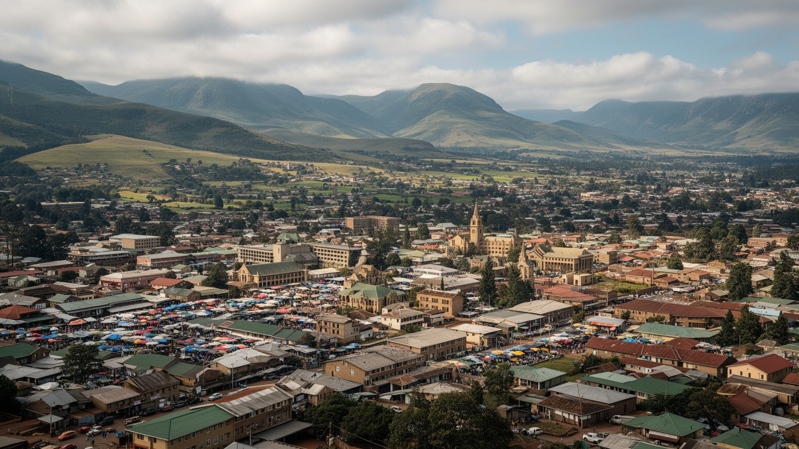
🇸🇿 エスワティニ / 南部アフリカ / World City Atlas
エスワティニの高原に置かれた行政首都です。王制国家の政治、南アフリカ経済圏との結びつき、金融と商業、シスワティ文化、渓谷の暮らしが小さな都市空間に重なります。
高原の行政首都
ムババーネは国家の行政窓口でありながら、儀礼や議会の重心は近郊ロバンバにもあります。高原の涼しさ、坂道、市場、金融機関、南アフリカへ向かう道路が、首都の実感を作ります。
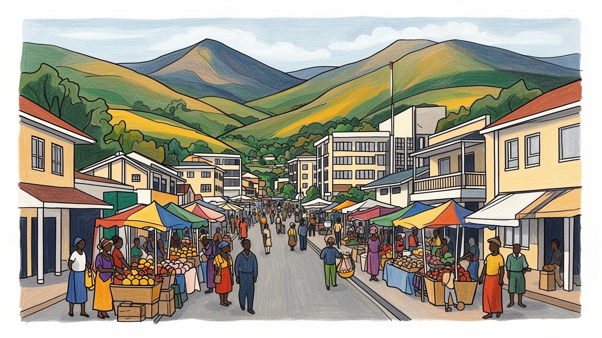
ムババーネは南アフリカに囲まれた小王国の行政首都です。国境道路、ランド圏通貨、王制政治、近郊ロバンバの儀礼機能が重なり、ラジオの国境ニュースまで生活感覚に入ります。近さも交渉力です。街の空気にも触れます。
行政、銀行、保険、小売、ホテル、教育、周辺の林業や農業関連が雇用を支えます。南アフリカへの通勤や輸入品価格にも左右され、若者の仕事探しと公共部門への期待が強いです。若い働き手の選択にも深く響きます。
シスワティ語、王室儀礼、キリスト教会、伝統行事、近郊の文化村が都市の背景です。日曜礼拝、家族の葬送、学校行事、店先の会話が、王国の文化を日常の時間に結びます。信仰の場も街を静かに支え続けています。
観光客は市場、丘の眺望、クラフト、ロバンバ、ムリルワネ方面を組み合わせます。住民には家賃、水道、交通費、医療、食料価格が切実で、夜の食堂や乗合停留所にも格差が見えます。観光と生活が近い小首都です。
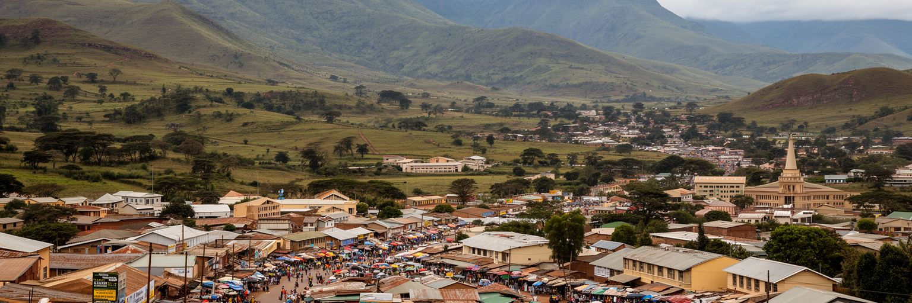
ムババーネはエスワティニ北西部のハイベルトにあり、谷と丘を縫うように市街が広がります。標高の高さは涼しい空気と霧をもたらし、赤土の斜面、ユーカリや松の緑、行政施設、商店街、住宅地を近い距離で見せます。大河や港に支えられた首都ではなく、道路が都市の骨格です。南アフリカのネルスプロイト方面、マンジニやロバンバ、モザンビーク方面へ続く幹線が、人、燃料、輸入品、観光客、通勤者を運びます。坂の多い地形では、徒歩の負担、雨季の排水、バスやコンビの停留所、道路補修が暮らしの質を左右します。中心部の行政街区と商業地区は小さくまとまりますが、周辺の住宅地に暮らす人には移動費と時間が大きな負担です。高原の涼しさは快適さである一方、霧や雨が視界を狭め、舗装の傷みを早めます。都市を歩くと、首都の建物よりも、丘を上り下りする日常の動線が印象に残ります。ムババーネの地理は、国家の中心という肩書きと、山あいの小都市としての生活感を同時に読ませます。中心部の余白と周辺斜面の距離感は、首都を平面の地図ではなく、標高差のある生活圏として理解させます。谷をまたぐ移動の小さな負担が、都市の使いやすさを決めています。丘の街では距離が短くても、坂の上下が生活時間を大きく変えます。公共交通の本数や停留所の位置も、首都の便利さを左右します。
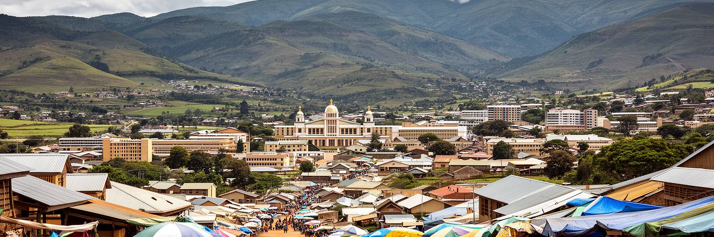
ムババーネは行政首都ですが、エスワティニの政治を読むには近郊ロバンバとの関係が欠かせません。政府機関や省庁、金融機能はムババーネに集まり、王室儀礼、議会、国立競技場、重要な文化行事はロバンバ周辺で強く見えます。この二つの重心は、近代官僚制と王国の伝統的権威が並んで動く国の構造を映します。憲法、内閣、行政手続き、国際援助、予算の言葉はムババーネで扱われますが、国民統合を示す祭礼や王室の象徴は別の場所で可視化されます。住民にとって政治は遠い制度であると同時に、身分証明、土地、学校、医療、公共雇用、警察、道路整備として毎日の暮らしに触れます。王制を支持する声、改革を求める声、政治的自由をめぐる緊張は、小さな首都の会話にも影を落とします。行政首都の役割は、王国の象徴を否定することではなく、制度を住民のサービスとして機能させることです。ムババーネを見れば、首都とは権力が一か所に集まる場所ではなく、行政、儀礼、伝統、改革要求が近い距離で調整される空間だと分かります。二都の距離が短いことは便利ですが、権力の所在が複数に分かれるため、首都性は常に場面ごとに読み替えられます。式典の場と窓口の場が分かれることが、王国政治の独特な輪郭です。この分散は国の歴史を映す一方、住民にはどこで何を手続きするのかを知る力も求めます。
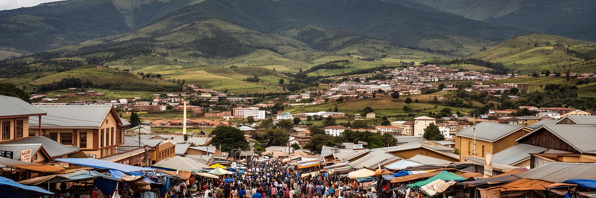
エスワティニは南アフリカにほぼ囲まれ、ムババーネの経済もその現実から離れられません。通貨リランゲニは南アフリカ・ランドと連動し、多くの輸入品、燃料、食品、建材、医薬品、衣料は南アフリカ経由で入ります。週末の買い物、通院、留学、出稼ぎ、物流は国境を越え、首都の物価と雇用にも影響します。国境が近いことは機会である一方、為替、関税、燃料価格、南ア側の景気、交通規制に都市の生活が揺さぶられることでもあります。銀行や保険、ホテル、小売のサービスは国内需要だけでなく、地域の移動と観光にも支えられます。若者にとって南アフリカは学びと仕事の可能性ですが、同時に人材流出や家族分離の入口にもなります。小国の首都としてムババーネが重要なのは、国際的な独立性と地域経済への依存を同じ街路で示すからです。行政は国の制度を守りながら、住民が実際に使う市場は越境の価格と流通で動きます。国境を越える道路が滞れば、棚の品ぞろえ、運賃、建設現場、病院の薬まで影響を受けます。ムババーネの地政学は、旗や国境線よりも、生活物資がどこから来て、家計がどの通貨感覚で計算されるかに表れます。この依存は弱さだけではなく、広い市場へ近い利点でもあり、地元企業が物流やサービスで成長する余地を残しています。小国の柔軟さと交渉力が、国境近くの首都で試されています。
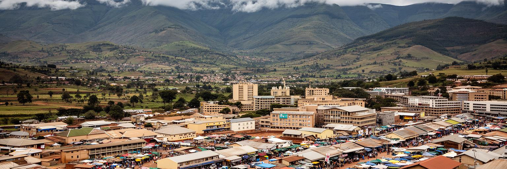
ムババーネの中心部には、政府機関、銀行、保険会社、法律事務所、通信会社、ホテル、商店、飲食店が集まります。巨大な金融街ではありませんが、小国の行政と民間サービスを束ねる実務の中心です。公務員、銀行員、警備員、清掃員、店員、運転手、露店商、ホテル従業員、事務職が、平日の街を動かします。公共部門の賃金や政府支出は商業に波及し、予算の遅れや財政引き締めは店の売上にも影響します。銀行や保険は近代的な業務を担いますが、住民の多くは現金収入の不安定さ、学費、医療費、葬儀費用に悩みます。中心部の小売店では輸入品と地元産品が並び、物価の上昇はすぐに家計の会話になります。首都としての雇用は魅力ですが、仕事の数は限られ、若者は学歴と人脈、交通費、英語力に左右されます。近年のデジタル決済や携帯通信は事務手続きと商売を便利にしますが、通信費と電力の不安定さは小規模事業者の負担にもなります。ムババーネの業務中心を読むには、建物の規模よりも、公共部門に依存する小国経済の循環を見る必要があります。首都の仕事は、国の財政と家族の食卓を思った以上に近く結んでいます。昼休みや給料日、月末の支払い、官庁の予定、ラジオ広告やSNS告知は、商店や食堂の売上を左右する小さな景気指標です。焼き肉の匂いが立つ夕方の店先にも、現金の流れが表れます。
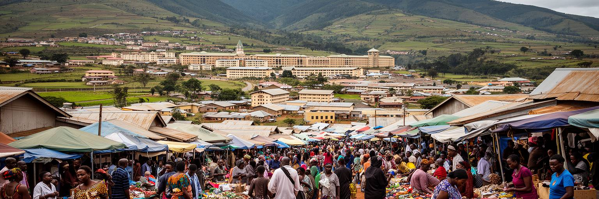
ムババーネの日常は、中心市場、バス乗り場、坂道の商店、学校、教会、診療所、住宅地を行き来する生活で成り立ちます。市場では野菜、果物、古着、日用品、携帯関連の小物、軽食が売られ、近郊農村から来る人と市内で働く人が交わります。首都の顔は整った行政地区にありますが、生活の実感は食料価格、交通費、水道、家賃、電気、子どもの通学に強く出ます。所得格差は小さな街でもはっきり見え、車で移動する人と徒歩や乗合交通に頼る人では、同じ坂道の感じ方が違います。女性の露店、若者の運搬、家事労働、警備や清掃の仕事は、都市を支えながら目立ちにくい労働です。雨の日には移動が遅れ、乾いた季節にはほこりが店先に入り、家計は燃料と食料の価格に敏感になります。行政首都であることは手続きへの近さをもたらしますが、すべての住民が制度を簡単に使えるわけではありません。ムババーネの暮らしを読むには、市場で交わされる小さな支払いと、丘の上の住宅へ帰る移動を見ます。首都の静かな印象の下には、家族を支えるための細かな労働と節約が重なっています。近所の信用や親族の助けは公的制度を補いますが、病気や葬儀が続けば、支え合いだけでは家計を守りきれません。夕方の焼きトウモロコシ、果物の匂い、下校する子どもと高齢者を乗せるコンビの混雑も、生活保障の薄さを映します。
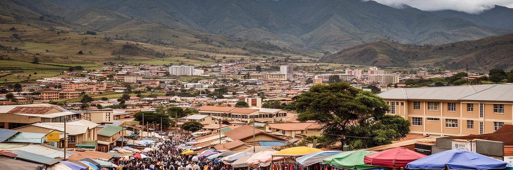
ムババーネの文化は、近郊ロバンバの王室儀礼や国立博物館、文化村、伝統舞踊、シスワティ語の日常と深く結びつきます。インクワラやウムランガのような王国儀礼は、観光的な見世物である前に、国家、家族、若者、性別役割、王権の理解に関わる大切な時間です。一方、市内の日常文化はもっと細かく、教会の礼拝、学校の行事、葬儀、結婚式、店先の会話、音楽、携帯電話で共有される情報の中にあります。キリスト教会は教育、相談、福祉、共同体の支えとして強く、伝統的な信仰や家族儀礼とも並びます。文化を一枚の民族衣装に閉じ込めると、都市に暮らす人の多様な経験を見落とします。若者はシスワティ語と英語、南アフリカのメディア、地元の音楽、教会生活、家族の期待を行き来しながら自分の居場所を作ります。王国の伝統は誇りであり、同時に政治やジェンダーをめぐる議論の対象にもなります。ムババーネを文化都市として読むとは、儀礼の華やかさだけでなく、祈り、学び、家族の義務、若者の表現が毎日どのように調整されているかを見ることです。観光で紹介される伝統と、住民が毎日使う言葉や礼儀をつなげて見ると、王国文化は固定された過去ではなく、変化する都市生活の一部だと分かります。合唱、ラジオ、SNSの短い動画、週末のサッカー応援、家庭の食卓まで、都市の文化は複数の音で育ちます。
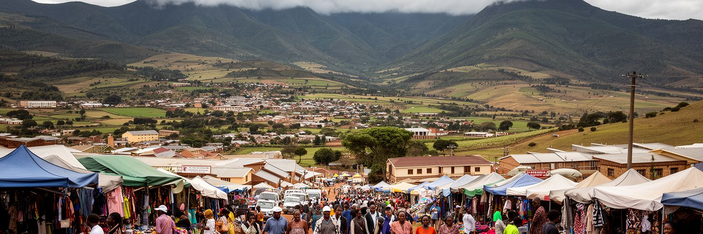
ムババーネを訪れる旅は、市内だけで完結しません。近郊のロバンバ、エズルウィニ渓谷、ムリルワネ野生生物保護区、クラフト市場、文化村を組み合わせることで、エスワティニの政治と文化と自然を短い距離で体験できます。ムババーネは宿泊、銀行、交通、買い物の基点になり、周辺の谷と保護区が観光の奥行きを作ります。高原の眺望、市場の手工芸、王室関連施設、伝統舞踊、野生動物、温泉やホテルは、南アフリカからの週末旅行者にも近い資源です。ただし観光の利益が都市と周辺共同体に公平に届くには、ガイド、運転手、クラフト作家、宿泊業、文化施設の担い手が安定して収入を得られる仕組みが必要です。短い滞在で写真だけを消費すると、儀礼や自然保護の意味は薄くなります。観光客には安全情報、写真の許可、宗教や王室行事への配慮、保護区でのルールを確認する姿勢が求められます。ムババーネ観光の魅力は、大都市の量ではなく、首都、王都、渓谷、保護区が近接していることです。小さな移動の中で、国家の象徴と日常市場、自然景観を続けて読める点が、この地域の旅を特徴づけます。近距離の旅だからこそ、移動を急がず、ガイドや作り手の説明を聞く時間が、土地の理解を深めます。宿泊地としての首都が周辺へ収入を流せるかも、観光圏の大切な論点です。時間の使い方も旅の質です。
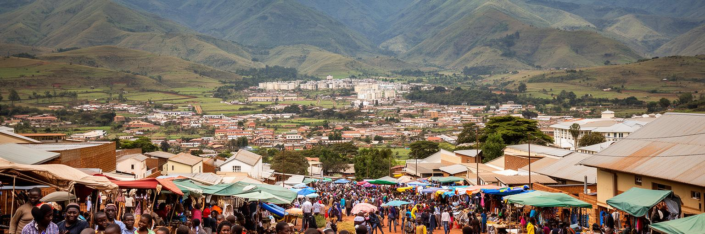
ムババーネには学校、専門教育、行政機関、民間事務所、ホテル、小売店が集まり、若者にとって仕事と学びを探す場所になります。英語とシスワティ語を使い分け、南アフリカの大学や職場も視野に入れながら、若い世代は首都で機会を探します。しかし公共部門の採用は限られ、民間雇用も景気と消費に左右されます。失業や不安定な仕事は、家族への仕送り、学費、住宅費、交通費を重くし、移住への圧力を高めます。教育は貧困から抜ける道として期待されますが、資格を得ても仕事がなければ失望が深まります。女子学生の安全な通学、若い母親への支援、職業訓練、実習先、起業資金、通信環境は、首都の将来に直結します。若者は政治的な声の担い手でもあり、雇用と表現の場が狭いと不満は蓄積します。カフェ、教会、スポーツ、音楽、携帯通信は、若い人が情報を交換し、つながりを作る場所です。ムババーネが持続的な首都になるには、行政の建物だけでなく、若者が学び、働き、戻って来られる道を作る必要があります。小さな都市ほど、一人の雇用が家族全体を支える重みを持ちます。首都に集まる学びの場が、地方出身者にも開かれているかどうかは、国全体の機会の偏りを映します。若者が残れる都市は、単に学校が多い都市ではなく、学んだ後の仕事が見える都市です。小さな実習先も重要です。
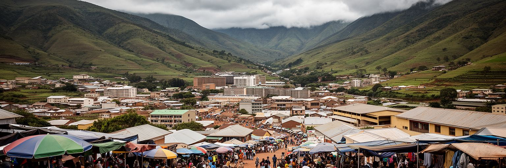
ムババーネの社会課題は、国の規模が小さいから軽いわけではありません。エスワティニはHIV、結核、貧困、失業、若者の将来不安、ジェンダーに関わる暴力、医療費や交通費の負担と向き合ってきました。首都には病院、診療所、行政窓口、国際機関、NGOが集まり、支援にアクセスしやすい面がありますが、周辺の低所得世帯や農村から来る人には距離と費用が壁になります。慢性疾患の治療、薬の継続、栄養、メンタルヘルス、家族の介護は、統計よりも家の中で重く感じられます。所得のある公務員や専門職と、不安定な小商い、家事労働、短期雇用に頼る人の差は、住宅地、学校、移動手段に現れます。政治的な発言の余地や改革要求をめぐる緊張も、都市の安心感に関わります。社会サービスは制度としてあるだけでは足りず、言語、費用、信頼、移動のしやすさがそろって初めて使えます。ムババーネの課題を読むことは、首都に集中する支援資源と、それでも残る生活の脆さを同時に見ることです。静かな高原の景観の中で、健康と所得の不平等は日々の選択肢を狭めています。支援の多さが問題の解決を意味するわけではなく、継続して通える仕組みと、偏見なく相談できる空気が重要です。小さな首都では噂も広がりやすく、安心して助けを求められる距離感が問われます。信頼の差も大きいです。
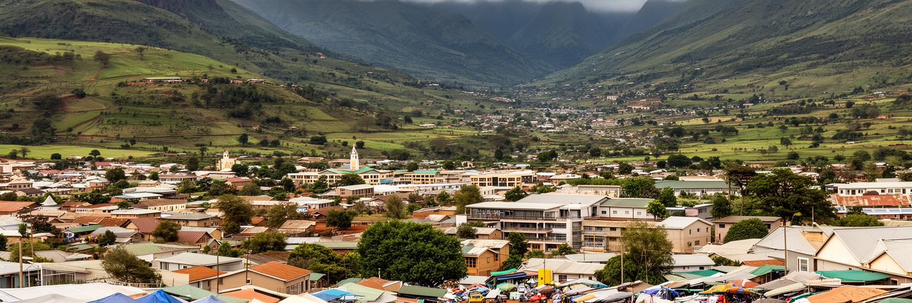
ムババーネの気候は南部アフリカの高原都市らしく、比較的涼しく、雨季には霧と湿り気が街を包みます。この環境は緑の景観を作りますが、都市管理には繊細さを求めます。丘陵地の開発では、斜面の浸食、排水、土砂流出、道路の傷み、住宅の安全が焦点になります。森林や草地は水源保全と景観に大切で、周辺の林業や開発とのバランスも問われます。気候変動が雨の強さや乾季の水不足を変えれば、低所得世帯ほど被害を受けやすくなります。排水溝の詰まり、未舗装路のぬかるみ、橋の傷み、住宅の湿気は、日常の不便であると同時に公衆衛生の論点です。涼しい高原という印象だけで都市を語ると、水、廃棄物、斜面管理、公共交通の負担を見落とします。中心部の緑地や街路樹は暑さを和らげ、歩行者の休息場所にもなりますが、管理が弱ければごみや治安の不安が増えます。ムババーネの都市環境を守るには、景観の美しさと生活インフラを同じ政策として扱う必要があります。雨と霧の街であることは、観光の魅力であると同時に、道路、住宅、水の管理を毎年試す条件でもあります。住宅開発が斜面へ広がるほど、排水と交通と自然保全を一体で考えなければ、景観の魅力そのものが損なわれます。通学路のぬかるみ、高齢者の坂道移動、夜道の照明も環境管理の一部です。斜面の安全は生活の安心に直結します。
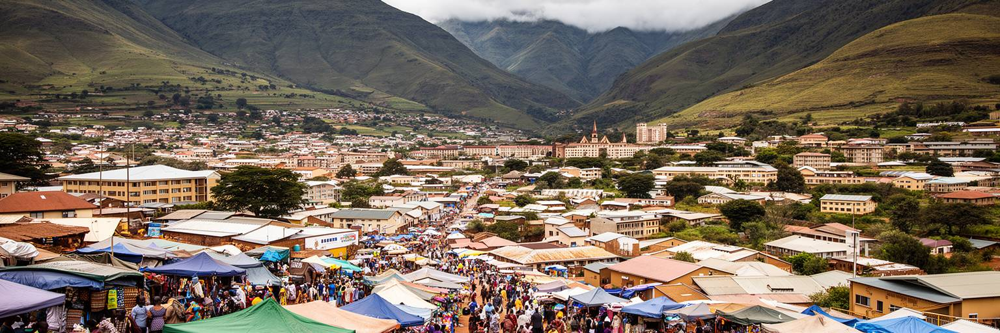
ムババーネは人口やGDPの大きさで世界を動かす都市ではありません。それでも世界都市地図に置く意味があるのは、小国の主権、王制政治、南アフリカ経済圏、行政実務、文化儀礼、健康課題、若者の雇用が、非常に近い距離で重なっているからです。大都市のような密度や速度はありませんが、首都が何を住民に約束するのかを考える材料が多くあります。行政の建物があり、王国の儀礼は近郊で続き、市場では越境経済の価格が語られ、教会や学校では家族の将来が話し合われます。高原の坂道は美しい景観であると同時に、通勤、通学、医療へのアクセスを左右する生活条件です。ムババーネを読むことは、都市の重要性を高層ビルや金融規模だけで測らない練習になります。小さな首都ほど、制度の弱さも支え合いの強さも見えやすく、国境を越える依存と独立国としての誇りが同じ店先に並びます。ここでは世界経済の末端ではなく、地域秩序の中で小国が自分の制度と文化を維持する現場が見えます。ムババーネの価値は、静かな高原都市の中に、国家、家族、労働、信仰、移動をめぐる大きな問いが凝縮している点にあります。その意味で、ムババーネは周辺化された小都市ではなく、世界の都市を読む尺度を広げるための重要な観察点です。規模の小ささが、国家と生活の関係をかえって鮮明にします。